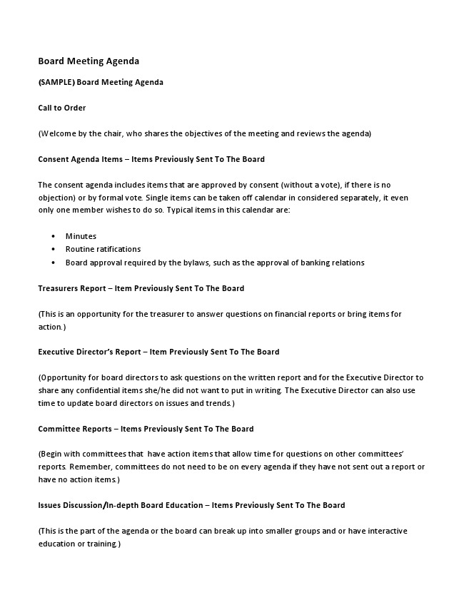

Board Meeting Agenda
(SAMPLE) Board Meeting Agenda
Call to Order
(Welcome by the chair, who shares the objectives of the meeting and reviews the agenda)
Consent Agenda Items – Items Previously Sent To The Board
The consent agenda includes items that are approved by consent (without a vote), if there is no objection) or by formal vote. Single items can be taken off calendar in considered separately, it even only one member wishes to do so. Typical items in this calendar are:
• Minutes
• Routine ratifications
• Board approval required by the bylaws, such as the approval of banking relations
Treasurers Report – Item Previously Sent To The Board
(This is an opportunity for the treasurer to answer questions on financial reports or bring items for action.)
Executive Director’s Report – Item Previously Sent To The Board
(Opportunity for board directors to ask questions on the written report and for the Executive Director to share any confidential items she/he did not want to put in writing. The Executive Director can also use time to update board directors on issues and trends.)
Committee Reports – Items Previously Sent To The Board
(Begin with committees that have action items that allow time for questions on other committees’ reports. Remember, committees do not need to be on every agenda if they have not sent out a report or have no action items.)
Issues Discussion/In-depth Board Education – Items Previously Sent To The Board
(This is the part of the agenda or the board can break up into smaller groups and or have interactive education or training.)
Old (Unfinished) Business
(Items that have been postponed from or not finished from previous meetings are handled here.)
New Business
(This is an opportunity for a board director to bring up items that have not been placed on the agenda. In the case of major issues, there likely would not be enough time for a thorough discussion of the item. The board could agree that such an issue would be scheduled for discussion at future board meeting or delegated to the appropriate committee for initial discussion with a report back to the board at a future meeting.)
Evaluation of The Meeting
(This can be a quick, two-minute appraisal. Board directors answer two questions: “What went well?” and “What did not?” – Also see Board Meeting Evaluation Form.)
Adjournment
(Time meeting adjourned.)